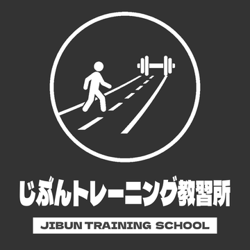
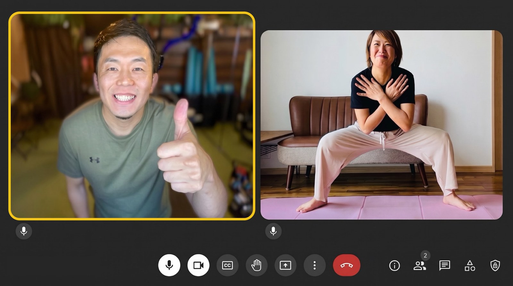

じぶんトレーニング教習所自転車に初めて乗る時のように、
最初はトレーナーがフォームを1から教えます。
出来るようになって来たら少しずつ手を離していきます。
そして最後は、ひとりで乗り続けられる状態に。
無料体験を申し込む
自転車に初めて乗る時のことを思い出してみてください。
最初は補助輪をつけて、さらに横で大人がサポートする。そこから徐々に補助輪を外していき、最後にはサポートなしで乗りこなす練習をする。
じぶとれは、自転車に乗る時と同じようにトレーニングが1人で出来るようになるまで順番に進めていきます。
自転車の練習と同じ順番で、3か月かけて進めます。
月が進むごとに、トレーナーが付く時間を減らし、ご自身で進める部分を増やしていきます。
毎週のパーソナルで、フォームと自分のプログラムを固めます。
隔週のパーソナルに加えて、スタートアップセッションが始まります。5分だけつないで今日やることを確認したら、あとは自分で実践にチャレンジします。
最後の卒業セッションで、フォームや負荷に問題がないかを、一緒に確認します。
少しだけじぶとれの生まれたキッカケをお話させてください。
ある日、私がオンラインのお客様と、ジムに来てくださるお客様の予約を、同じ時間に入れてしまいました。双方にお詫びをすると、オンラインのお客様はこう言ってくださいました。
「せっかくなので今日は自分でトレーニングやってみます。いつものメニューだけ送ってください。」
後に記録を確認すると、お客様は実際に一人でいつも通りのトレーニングができていました。正しいやり方とスタートのキッカケがあれば、一人でも動ける。そこからじぶとれがスタートしました。
続ける為に必要だったのは、
気合いや意志の強さではなく
続けられる「仕組み」です。
初めて3か月、運動を続けられた。その達成感が、自信につながりました。
家事・育児だけだと、自分自身の達成感や満足感を感じる機会が無いので、久しぶりに自分のことで「嬉しい」と感じる機会になりました。
T.Mさん（40代・女性）
※感じ方・変化には個人差があります。
じぶんトレーニング教習所（以下「当サービス」）は、お客様の個人情報を、以下のとおり取り扱います。
無料体験のお申し込みフォームで、次の情報をお預かりします。
・メールアドレス
・お名前
・希望体験日時
・お問い合わせ内容
お預かりした個人情報は、次の目的で利用します。
・無料体験の日程調整と、ご連絡のため
・サービスの提供のため
・お問い合わせへの対応のため
法令に基づく場合を除き、お客様の同意なく、個人情報を第三者に提供しません。
お申し込みの受付と、オンラインでのセッションに、Google社のサービス（Googleフォーム、Googleスプレッドシート、Google Meet）を利用しています。お預かりした情報は、これらのサービス上で管理します。
ご自身の個人情報の開示・訂正・削除をご希望の場合は、下記の窓口までご連絡ください。
jibun.tr.school@gmail.com
制定日：2026年3月1日